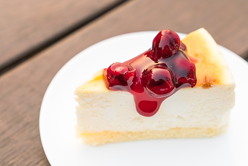
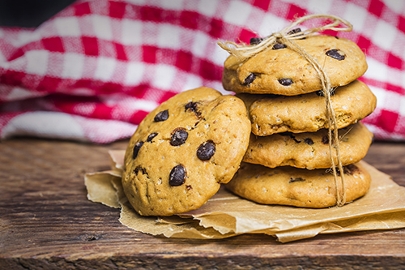
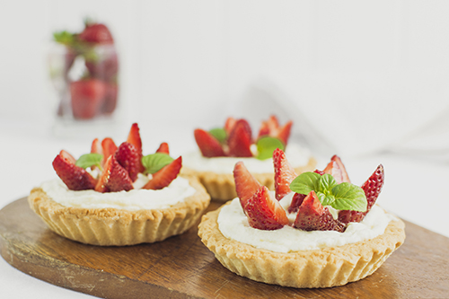
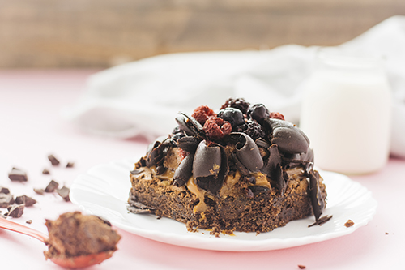
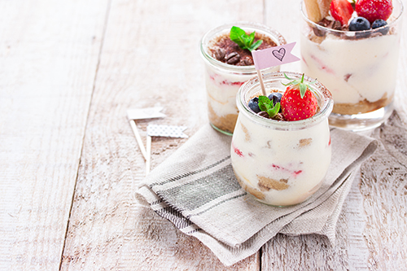

Strawberry
Cheesecake
An incredible rich-yet-light cheesecake recipe, finished with a gorgeous strawberry topping that tastes as amazing as it looks.

Chocochip
No funny ingredients, no chilling time, etc. Just a simple, straightforward, amazingly delicious, doughy yet still fully cooked, chocolate chip cookie that turns out perfectly every single time!

Strawberry Tart
Nothing says spring quite like this easy strawberry tart. The crust is a simple no-chill version of a pie crust that we are obsessed with, ever since we used a similar version for our apple tart. The filling is a sweet cream cheese with a hint of lemon that makes the strawberries pop. We will be making it all season long!

Chocolate Cookies
These delicious cookies are almost cakes, with a lovely soft texture that melts in your mouth, you will have the adults and children coming back for more!

Strawberry Yoghurt
Best flavored yogurt is ready. This recipe is one of the many ways to enjoy the fresh strawberries during its annual season and it involves only little cooking and also preserves all vitamins and carbohydrates of it.